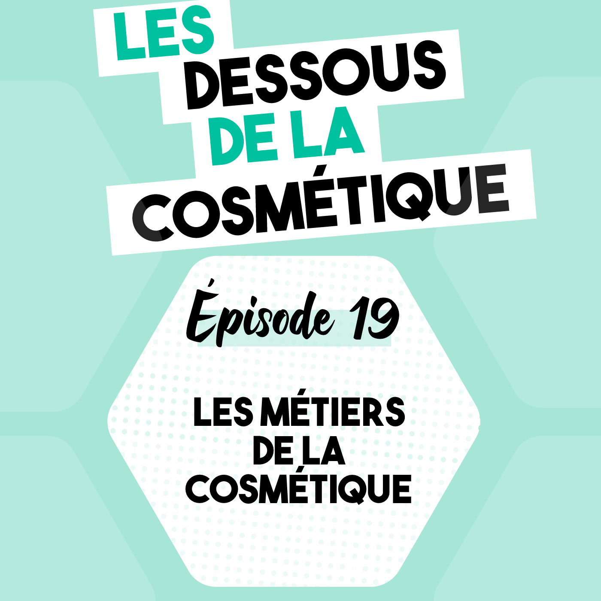

Podcast : Épisode 19, les différents métiers de la cosmétique

Écoutez l'épisode audio sur les différents métiers de la cosmétique.
- Disponible sur : Épisode 19 : Les métiers de la cosmétique
- À retrouver également sur Spotify, Apple Podcast et Google Podcast
Les différents métiers de la cosmétique :
- Marketing
- Recherche et Développement (R&D)
- Réglementaire
- Opération
- Vente
- Esthétisme
- Administratif
QUELQUES CHIFFRES !
La cosmétique est un secteur phare de l'économie française avec 24 milliards d'euros de chiffres d'affaires en 2018. 24 milliards, c'est un chiffre tellement grand que l'on peut avoir du mal à se le représenter, je vous propose alors une image : sur Terre, il y a 7 milliards d'humains, donc c'est l'équivalent d'un achat de 3 euros de cosmétiques français, effectué par chaque personne en un an.
Le CA (chiffre d'affaire) de la cosmétique française est énorme, ce n'est pas uniquement dû à la consommation des Français.e.s, c'est surtout dû à une exportation colossale. En 2019, 7 milliards d'euros de cosmétiques étaient exportés uniquement en Europe, et plus de 15 milliards vers le reste du monde. C'est un secteur qui crée également beaucoup d'emplois en France, car 170 000 emplois lui sont consacrés dont 65% des postes occupés par la gente féminine. Avec autant de CA et d'emplois, on s'imagine facilement que cette industrie implique beaucoup de monde et donc beaucoup de métiers.
LES DIFFÉRENTS DOMAINES
Voici une liste non exhaustive des principaux métiers liés à la cosmétique, cités dans l'ordre de cycle de vie du produit, de l'idée jusqu'au delà de sa mise sur le marché.
La première étape pour créer un nouveau produit, c'est son idée. C'est généralement une des missions du département marketing, qui peut se décomposer en plusieurs équipes si l'entreprise est grande.
1. LE MARKETING
Le marketing produit : Product Development
L'idée du nouveau produit vient notamment de l'équipe marketing produit comme le Product Development Manager / Chef de produit. Il a la responsabilité de développer le produit, de son idée jusqu'à sa mise sur le marché.
Son quotidien est beaucoup de gestion de projets, de suivi des actions, de coordination avec les différents services. Si vous voulez en savoir plus, 🖇 l'épisode 4 est totalement dédié au développement produit.
Le chef de marque ou chef de groupe
On peut aussi compter sur les chefs de marque et chefs de groupe qui s'occupent de l'image de la marque et l'image du groupe.
Le marketing stratégique
Il y a également un marketing stratégique. C'est la responsabilité du directeur marketing qui a une vision de la marque sur le plus long terme. Il s'appuie sur des études faites par l'équipe du marketing étude.
Le marketing étude
Le marketing étude est composé de responsables d'études, un responsable de bases de données, un chargé d'étude, d'intelligence marketing. Ils analysent les chiffres des dernières ventes, par exemple, pour en déduire des nouvelles tendances et ce vers quoi se tourner dans le futur.
Le marketing distribution
L'équipe de marketing de distribution est composée de catégorie manager, marchandiser, trade marketer aussi appelé chargé de la promotion des ventes. Il allie des compétences en marketing et en commerce. Sa mission première est de stimuler les ventes auprès des distributeurs grâce aux PLV = publicité sur le lieu de vente, jeux-concours, visuels, affichage, argumentaires, animations... Ces stratégies mettent en avant le produit choisi sur le lieu de vente pour le démarquer et orienter l'achat du consommateur.Le marketing client
Il faut également mettre en place une relation de confiance avec le client en dehors du point de vente. Ce sont les missions de l'équipe marketing Client qui se compose du responsable relation client, du responsable marketing direct, du community manager notamment avec l’e-mailing, les réseaux sociaux.
La relation presse
Il ne faut également pas oublier un membre pour gérer la relation avec la presse imprimée et digitale pour s'assurer des mentions fréquentes dans des magazines.
L'équipe créative
L'équipe créative peut compter un photographe, un vidéaste, un designer digital pour retoucher les photos et faire des montages. Il est important de créer du contenu régulièrement pour le marketing mais il faut également définir l'identité de la marque avec son logo, ses couleurs, le design de ses emballages, etc.
Quand l'idée du produit est claire et bien définie, il faut compter sur l'équipe de recherche et développement pour concrétiser cette merveille.
2. LA RECHERCHE ET DÉVELOPPEMENT
L'ensemble de la recherche et développement que l'on appelle aussi R&D ne fait pas partie de la même entreprise. Il faut regrouper des expertises très différentes en R&D pour le développement d'un seul produit, il est alors impossible que la marque gère l'ensemble du processus. Pour commencer, il faut définir les actifs voir matières premières à utiliser dans le produit pour l'efficacité, mais aussi pour l'histoire que l'on veut donner au produit.
Les entreprises de matières premières - extraction, identification...
On peut se tourner vers les fournisseurs de matières premières pour identifier les matières premières à utiliser. Ils regroupent tout un écosystème de métiers différents, de la culture de la biomasse, la production de la matière première à la vente de leurs matières.
Pour ne citer que quelques métiers, cette filière comporte des agriculteurs, des chimistes pour extraire, purifier et identifier la molécule d'intérêt, des biologistes, un service règlementation, des commerciaux, des marketers, etc.,
Chaque fournisseur de matières premières a sa spécialité (huiles végétales, gélifiants, humectants, émulsionnant, ...) donc il faut contacter plusieurs fournisseurs pour avoir les ingrédients nécessaires pour la formulation d'un produit.
La formulation et contrôle physico-chimique
Ensuite, il y a les équipes de formulation qui formulent le produit et généralement qui font le contrôle physico-chimique du produit dans le temps, ce sont les tests de compatibilité et de stabilité.
Les laboratoires de tests sur formule - pour l'efficacité, la sécurité...
Une fois que la formule plaît et parait robuste, elle est envoyée dans différents laboratoires pour notamment des tests microbiologiques avec le challenge test, des tests d'irritation et/ou de tolérance comme des patchs tests, des tests d'efficacité. D'ailleurs si vous voulez en savoir plus sur les tests, 🖇 l'épisode 8 est dédié au test de stabilité et compatibilité et 🖇 l'épisode 13 est dédié au patch test. Les principaux métiers de ces laboratoires de test sont biologiste voire microbiologiste. Il faut aussi compter sur un toxicologue pour s'assurer de l'innocuité de la formule.
Le développement packaging
Quand tout est prêt pour la formule, il ne faut pas oublier de la mettre dans un emballage primaire et potentiellement secondaire. L'emballage primaire est celui qui touche la formule, par exemple le pot, contrairement à l'emballage secondaire telle que la boîte en carton. L'emballage se conçoit avec le fournisseur d'emballage pour un développement sur-mesure ou des références standards. L'emballage peut être développé spécialement pour le projet quand la commande est très très grande et compte plusieurs dizaines voire centaines de milliers d'exemplaires. Si ce n'est pas le cas, la marque choisit alors un emballage standard, c'est-à-dire présent dans le catalogue du fournisseur. Beaucoup d'ingénieurs travaillent dans le développement des packaging.
3. LA RÉGLEMENTATION
Ensuite lorsque la formule a passé tous les tests, elle passe dans les mains du service réglementaire.
- Ils assurent que les formules respectent les réglementations en vigueur dans les pays où elles sont vendues
- Ils enregistrent les formules auprès des autorités locales. En Europe, chaque cosmétique doit être notifié sur le portail CPNP, et doit être accompagné d'un dossier d'information produit.
- Ils vérifient également que les revendications sont supportées par des études. Dans les grands groupes, il peut avoir une équipe à part pour les revendications, car c'est une expertise entre le marketing, la réglementation et les études faites sur des matières premières et surtout sur le produit fini.
- Ils font une veille active sur les nouveaux décrets ou réglementations internationales, pour s'assurer que les produits restent conformes dans le temps
4. LES OPÉRATIONS
Lorsque le service de réglementation a fait le nécessaire pour que le produit soit conforme et aux normes, le service opération peut alors commencer les choses sérieuses.
La production
La première étape de la production est l'étude de la formule car il faut faire une transposition industrielle, c'est-à-dire une montée en échelle. La formule a été développée à l'échelle de la paillasse dans des béchers ne dépassant pas les 5 kg et avec les outils et les agitateurs de la paillasse. Au contraire, la production se fait sur des centaines voire des milliers de kg, l'agitation, le cisaillement, homogénéité de la chauffe sont différents de celle de la paillasse. Il faut donc créer un protocole avec les outils de production pour reproduire au mieux à ce qui a été fait à la paillasse.
Ensuite, il faut peser les matières premières pour la production, produire la formule à grande échelle, la conditionner donc la mettre dans les articles de conditionnement. Les équipes de production gèrent également les plannings d'utilisation des cuves de production, des lignes de conditionnement, du personnel.
Le contrôle qualité
Dès que la production est faite, il faut contrôler sa qualité, c'est-à-dire faire une évaluation sensorielle, microbienne et physico-chimique (pH, viscosité, densité).
La gestion des flux : supply chain
Il faut également gérer les flux entrants et sortants, ce qui est la responsabilité des équipes de supply chain. Où stocke-t-on les matières et les articles de conditionnement ? Comment les étiqueter pour éviter toute confusion ? Comment gérer informatiquement les stocks ? Quand recommander les matières pour qu'elles arrivent à temps pour la production? Comment gérer l'envoi de commandes ? ...
Les achats
L'équipe supply chain est donc en relation avec l'équipe achat et s'assure que les commandes sont passées dans les temps pour respecter le planning de production. L'équipe achat négocie également les prix des matières, et clairement presque tout ce qu'ils achètent.
Après la production et lorsqu'on a le produit entre les mains grâce au service opération, il va falloir les vendre.
5. LA VENTE
La stratégie de vente
L'équipe de stratégie des ventes répond aux questions telles : Est-ce qu'on vend à des entreprises donc en B to B (business to business), est-ce qu'on vend à des particuliers donc en B to C (business to customer), quel est le réseau de distribution, quel prix...
La gestion des comptes clients
Ensuite, il faut gérer les comptes clients, c'est-à-dire s'assurer que nos gros clients, quand on fait du B to B, ont reçu leurs commandes, qu'ils ont bien reçu le nouveau catalogue avec les nouveaux produits, qu'ils ont une stratégie pour lancer nos nouveaux produits, ... C'est important pour la marque car vendre à Sephora, par exemple, lui assure beaucoup de ventes. Sephora a beaucoup de lieux de ventes et donc il faut négocier les prix, les délais de livraison, les plannning de lancement, etc.
Les vendeurs
Les vendeurs peuvent travailler directement en parapharmacies, chez les distributeurs, ou même directement dans la boutique des marques, si la marque est assez grosse pour avoir des boutiques .
Le service après vente
Ensuite, il faut une équipe de service après vente, pour répondre aux questions et plaintes des clients .
Les produits peuvent également être vendus à des entreprises qui les utilisent pour leurs activités tel le secteur de l'esthétisme.
6. L'ESTHÉTISME
◦ Salons d'esthétiques, de coiffure, d'onglerie, les spas qui utilisent les cosmétiques pour leurs activités
◦ Maquilleur professionnel, etc.
7. L'ADMINISTRATIF
Et finalement, il y a tous les secteurs annexes qui contribuent à ce que toutes entreprises fonctionnent bien
◦ RH, la paie
◦ Comptabilité